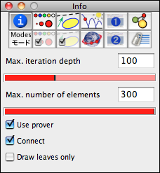
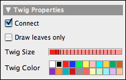

Transformation Groups
Transformation groups are perhaps among the most sophisticated objects currently available in Cinderella.2. A transformation group is constructed from a collection of transformations. A transformation group is can be applied to an arbitrary geometric object. This object is mapped by applying the elements of the transformation group iteratively. The transformation group has several applications and structural features. We will exemplify them by several concrete examples. It should be mentioned that the concept of transformation groups in Cinderella is different from the mathematical notion of a transformation group. The two main differences are that in Cinderella a transformation group does not per se contain the inverses of the transformations and that only a large but finite number of iterations are performed.
Creating a Transformation Group
We first will explain how to construct a transformation group that generated a simple plant-like structure on the screen. For this we place three points A, B and C as shown in the picture and create two Similarity transformations A->B; C->C and A->A; C->B. Selecting the two similarity transformations by shift-clicking them in the move mode and then choosing the mode Special->Transformation group creates a view button for the transformation group.
 |
| The starting situation |
If we add a single point D, select it and click the button of the transformation group a picture similar to the following is created:
 |
| Applying a simple transformation group to a poin |
This picture is created by applying both transformations to the point D. Then both transformations are applied to the generated images. This procedure is repeated until a either certain interation depth is reached or until the number of elements exceeds a certain limit. These parameters can be controlled in the inspector of the transformation group.
 |
| The transformation group inspector |
The parameters controllable in the inspector are by default applied to all mapped elements. Changing them does not change the parameters of the mapped elements. Parameters of already mapped elements can be changed by selecting the whole group of elements (by clicking any of the generated images) one can change their individual settings in the inspector.
The appearace details of mapped elements can be controlled by the following part of the inspector.
 |
| The twig settings |
One can observe that the points are connected by segments the segments exemplify the tree structure of the derivation process. One can turn off the connecting branches by the corresponding slot in the inspector. It is also possible to draw only the "leaves" of the generated tree. The following table shows all four combinations of drawing the points and conncecting them.
 |
 |
 |
 |
| Drawing all points... | ...or drawing only leaves |
Elements are only connected if the mapped element is a point. The following picture adds the mapping of an additional circle.
 |
| Mapping a circle |
Transformation Groups and Iterated Function Systems
Transformation groups are closely related to Iterated Function Systems. One can generate the corresponding IFS by selecting a transformation group and choosing the Special->IFS mode. The following picture shows the effect of a transformation corresponding to a pythagoras tree. The picture on the left shows the corresponding IFS. The IFS corresponds of all the limit points of the transformation group.
 |  |
|
| A Pythagoras tree... | ...and its IFS |
Transformation Groups With Dependencies
The transformation groups considered in the examples so far were "free" in a mathematical sense (if the coordinates of the controlling points were choosen generally enough). This means that in this general case no matter how long we proceed with the iteration process the same composed transformation will never occur twice. However if the parameters of the defining transformations were in a more special position it may happen that there are several ways to generate the same transformation by composition.
For instance take a simple reflection R. If R is applied twice the identity map is generated. So for instance R and R³ produce an identical transformation. If as described before the transformationn group is generated by a simple ennumeration of all possible compositions of transformations in the group and R is contained in the group, then many identical transformations will be constructed. This would be an unnecessary waste of computation power and memory. Luckily, Cinderella is equipped with a geometric proving engine, that allows to neglect transformations if they were already be generated before. This feature is used when the Use prover checkbox is checked in the inspector.
We exemplify the difference by a very simple example. Consider two different translations P and Q. Since translations commute with each other applying P after Q generates the same effect then applying Q after P. The pictures below exemplify the effect of using or not using the prover.
 |  |
|
| No prover used | Prover used |
The first situation is generated by not using the prover. A filled circle with opacity 20% is mapped by a translation group generated by two translations. One can observe that not many different circles seem to be generated. However the situation is different. Many circles were generated most of which overlap (you recognize this by the increasing opacity). If instead the prover is used, then the picture on the left is generated. Considerably more circles are visible no two of which overlap. The prover has thrown out all superfluous repetitions of transformations.
Ornament Groups
It is particularly interesting to study planar ornament groups (or cristallographic groups) with this feature of Cinderella.2. We will exemplify this by a few simple examples. First consider a triangle build of three mirrors, that form edge angles of 90°, 45° and 45°. These three reflections generate a reflection group like a kaleidoskopic prism. Applying this reflection gruop to an arbitrary geometric object creates a nicely symmetric picture in the plane.
 |  |
|
| Generating a reflection group... | ...and applying it. |
As a second example we consider a cristallographic group that is generated by rotations that come from a regular hexagon. We first draw a regular hexagon by using an appropriate Polygons mode. Then one defines a 60° rotation around the center and two 120° rotations at two consecutive verticies by using the Similarity mode. After generating a transformation group from these transformations one can again map arbitrary objects to obtain an ornamental pattern.
 |  |
|
| Generating a rotation group... | ...and applying it. |
The Generation Order
It is interesting to study which transformations are processed if the prover is used for a reflection group. In general a tree-like structure is generated that reached each cell of the reflection group exactly once. The following pictures show the situation for two different reflection groups. The default setting of transformation groups are used. This generates approximately 300 elements and uses the prover. If a point is mapped the Connect feature that is used by default connects points that differ by exatly one transformation. The tree of points represents the traversion order of the elements of the transformation group. Observe how different positions of the mirrors cause structurally very different trees.
 |  |
|
| A (90°,45°,45°) triangle group | A (60°,60°,60°) triangle group. |
Hyperbolic Transformation Groups
In hyperbolic geometry one can observe particularly interesting transformation groups. They are generalizations of the usual crystallographic groups. The main reason for the existing of those interesting symmetric patterns is the fact, that in hyperbolic geometry there exist regular n-gons with arbitrarily small vertex angles. For instance there exist regular polygons with 90° vertex angles. Four of these pentagons fit exactly around a hyperbolic corner. Thus the hyperbolic plane can be seamlessly tiled by regular pentagons with right angles. We will demonstrate how to construct such a tiling.
First we need a hyperbolic pentagon with right angles. For this we switch to hyperpolic geometry (see Geometries) and open a hyperbolic view (see Views). Then one has to construct a right angled pentagon. This can be done by using the Polygon->Regular Pentagon mode. If one changes the size of the pentagon, snap values are shown that indicate how many polygons fit around a corner (see Polygons). Stopping at a snap value of 4 (Figure 1) we obtain the desired right angled pentagon. By chosing the mode Rotation LL one can construct two rotations of 90° around two corners of the pentagon (Figures 2 and 3).
 |  |  | |||
| Figure 1 | Figure 2 | Figure 3 |
Creating the transformation group of these two transformations and mapping all segments creates the desired teselation.
 |
| A hyperbolic tesselation by regular pentagons |
The picture below shows the application of this hyperbolic group to a small triangle. Observe that it shows only rotational symmetry but no mirror symmetry. For the image the iteration depth was considerably raised.
 |
| A hyperbolic tesselation by right triangles |
Caution
Transformation groups with high iteration depth may be very time and memory demanding. So interactive drawings may be slowed down considerably by transformation groups with a huge iteration depth. Eventually transformation groups may even cause an out of memory error.
Page last modified on Friday 23 of December, 2011 [16:42:57 UTC].
The original document is available at
http://doc.cinderella.de/tiki-index.php?page=Transformation%20Groups